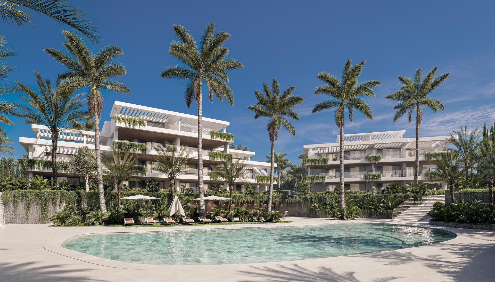
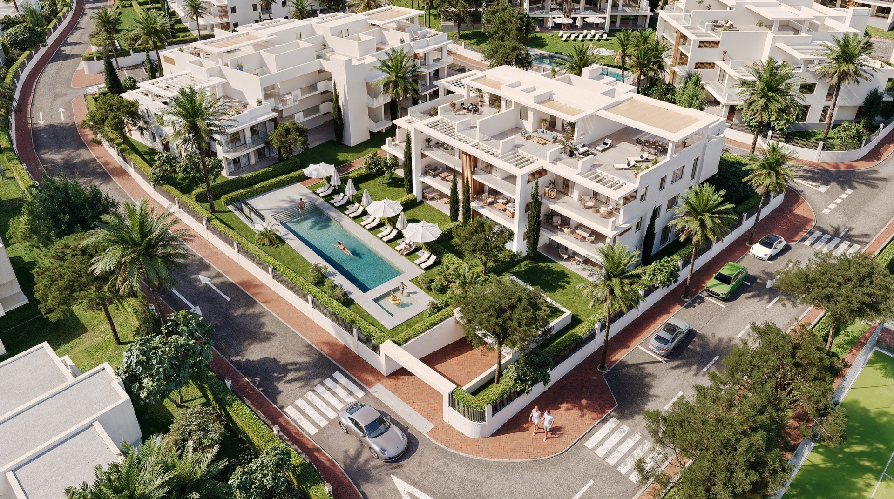
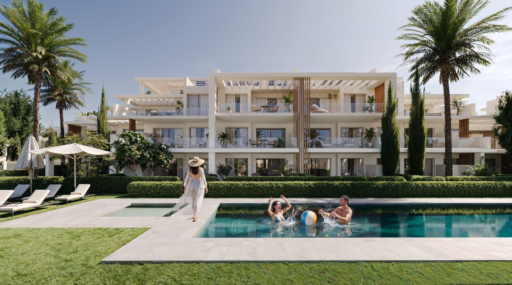
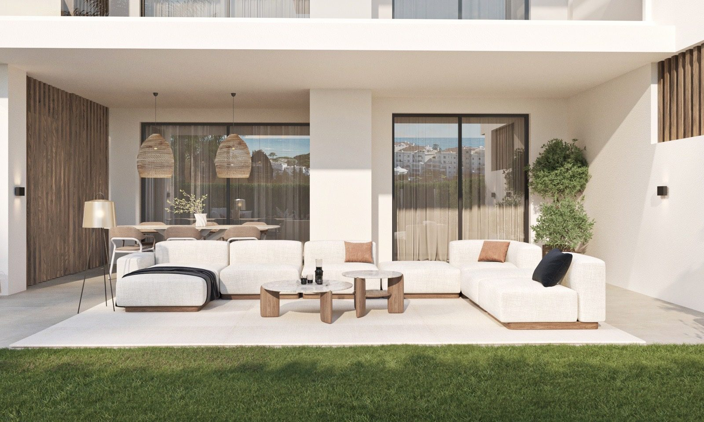
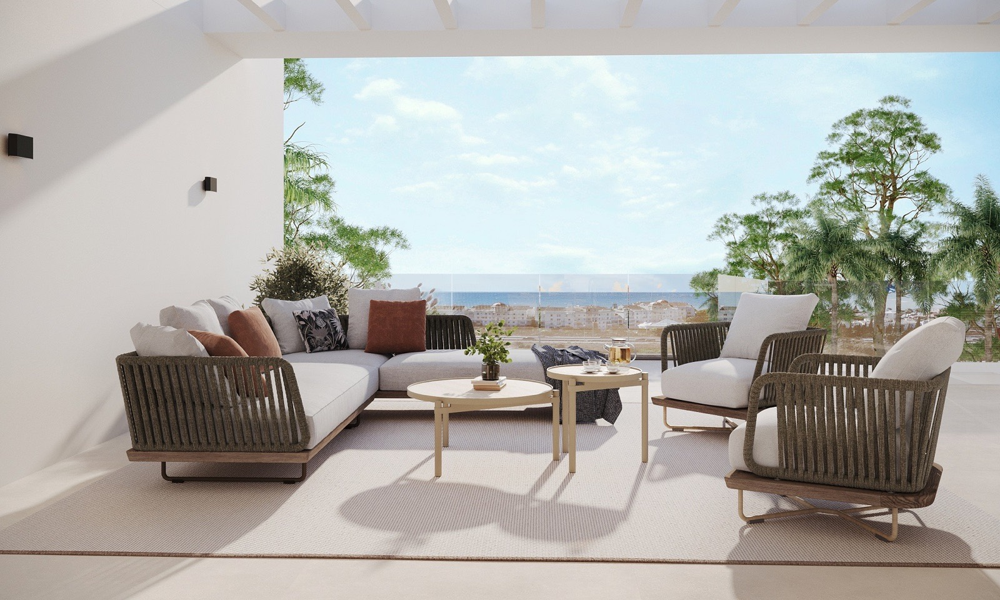
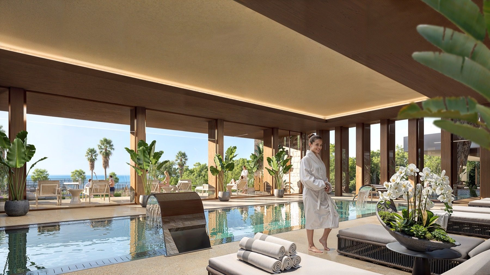
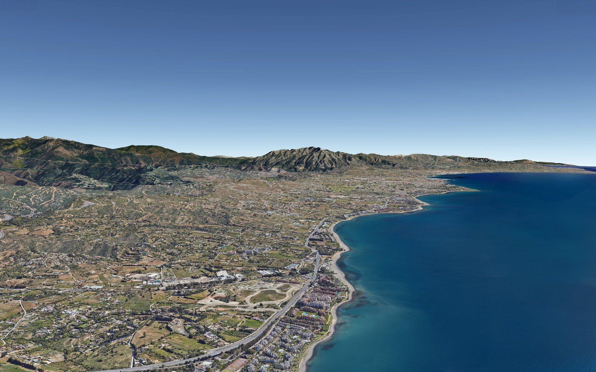
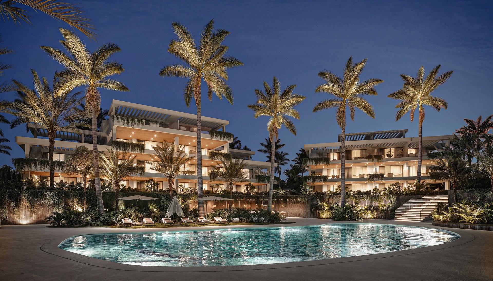
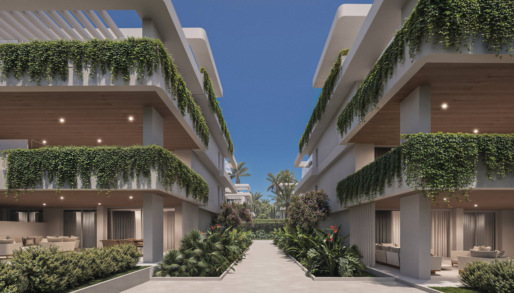
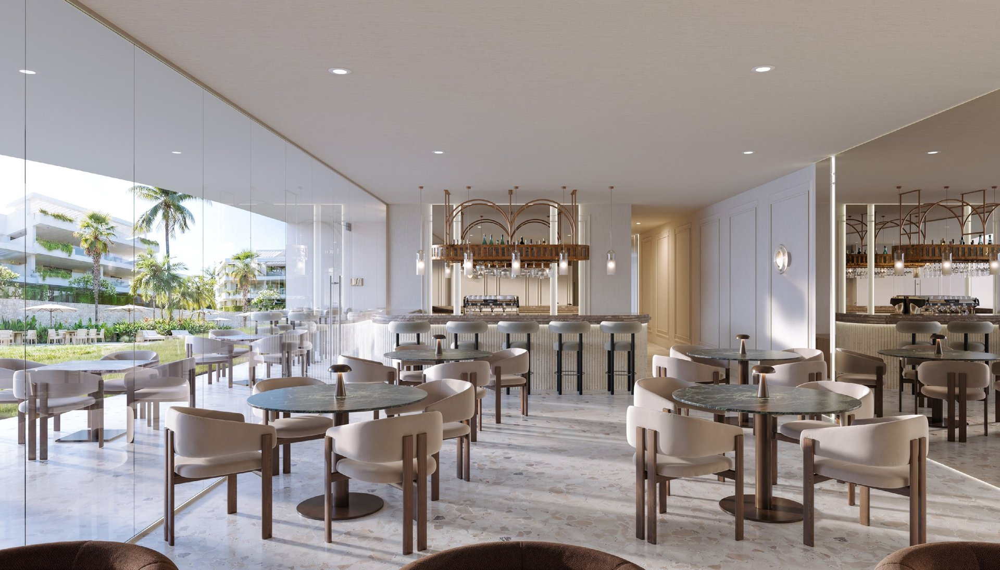

Buyer Profile
Suits both primary residence and lock-and-leave second-home buyers.

Compare current apartment and penthouse developments across Estepona, from low-rise garden homes on the New Golden Mile to gated communities in the town centre, with real prices and availability confirmed before you view.
Figures reflect currently published developments matching this search and are reconfirmed by Nueva Living before any viewing or reservation.
Estepona has been the most active new-build market on the Costa del Sol in recent years, and it covers more than one kind of address. A low-rise garden apartment on the New Golden Mile and a gated penthouse in the town centre are both "Estepona", but they suit different buyers.
New-build apartments and penthouses here are typically sold off-plan, with staged payments through to completion. Nueva Living reconfirms the current price list, floorplans and payment schedule for any development before you shortlist it.
Suits both primary residence and lock-and-leave second-home buyers.
Current releases are off-plan, sold with staged payments through to completion.
New Golden Mile developments favour space and resort amenities; central Estepona favours walkability.
Nueva Living confirms current availability, price list and payment terms directly with the developer.
Only developments currently matching this search are shown below. Price and availability are reconfirmed before a viewing.





Low-rise apartments and penthouses with large terraces, garden options and access to a wider resort setting.
Explore Project





Gated apartments and penthouses in central Estepona with a private spa, gym, cinema and coworking lounge.
Explore ProjectSpecification varies by development, but current Estepona apartment and penthouse releases typically include some combination of the following.
Usually the lower entry price for a given development, with lower service charges than a penthouse in the same building. Ground-floor units in these developments are often sold with a private garden rather than a terrace.
Typically the largest terrace or roof solarium in the building and the best view, at a meaningful price premium over a mid-floor apartment. Service charges are usually higher, reflecting the larger private outdoor space.
The New Golden Mile generally offers larger, more resort-style developments with more shared amenities and land around each building, while central Estepona offers smaller, more walkable developments closer to the old town and seafront. Both are typically sold off-plan. Nueva Living can talk through which setting suits your priorities.
Usually, yes. Service charges are typically calculated on built size or a fixed per-unit share, and a penthouse’s larger terrace or solarium generally puts it in a higher share than a mid-floor apartment in the same building. Nueva Living confirms the exact community fee structure for any development before you reserve.
In many of the developments we work with, yes, ground-floor units are sold with a private garden rather than the terrace that upper floors receive, though this varies by development and by building layout. We confirm this unit by unit.
Yes. Community amenities are available to owners year-round regardless of how often you visit, and are covered by the community service charge whether you use them or not.
This depends on the individual development’s community rules and the local municipal licence requirements. Nueva Living confirms the specific rental position for a development before you reserve.
Tell us your budget, preferred sub-area and must-haves. We will reply with current developments and availability that genuinely match.